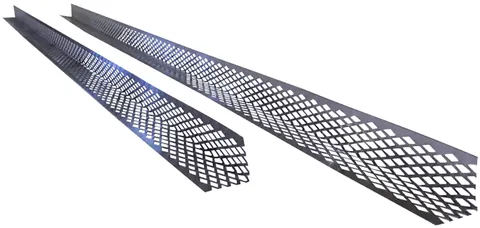
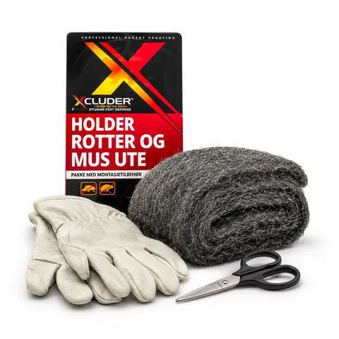
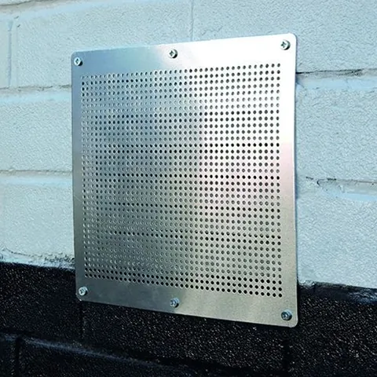

Noen høster er det mus overalt: i hytta, i boden, i bilen og under terrassen. Andre år ser du nesten ingen. Det er ikke tilfeldig. Smågnagerne i Norge svinger i faste mønstre, og i et toppår er det rett og slett mange flere dyr som leter etter mat og ly når kulden kommer.
Se forskjellen
Hva er et smågnagerår?
Et smågnagerår er et år der bestanden av mus og lemen når en topp. Fenomenet ble først lagt merke til hos lemen, men de fleste smågnagerartene i nordlige strøk svinger på samme måte. Toppene kommer typisk med tre–fire års mellomrom, men syklusene er ikke like regelmessige som før.
Lengden på syklusen øker jo lenger nord du kommer: rundt tre år ved 60 grader nord og rundt fem år helt nord i Skandinavia. I Skandinavia kan toppene også bre seg nordover som bølger. Et toppår i Sør-Norge kan følges av et i Trøndelag året etter, og i Nord-Norge året etter det.
Hvorfor svinger bestandene?
Forskerne har diskutert dette i lang tid. De fleste mener at syklusene i hovedsak drives av ytre faktorer, særlig samspillet mellom smågnagerne og rovdyrene som spiser dem, og mellom smågnagerne og plantene de spiser. Tett bestand gir også stress og mer aggressive dyr som får færre unger.
Vinteren betyr mye. Smågnagerne lever under snøen om vinteren, og en kald, stabil vinter med godt snødekke gir gode forhold. Lite snø og mye tining og frysing er ugunstig, og det ventes å bli vanligere med klimaendringene. Det er en av grunnene til at toppårene har blitt mindre forutsigbare.
Hva sier overvåkingen?
Smågnagerne i fjellet overvåkes med kamerafeller av NINA. Ifølge NINAs rapport fra 2025 var det en tydelig oppgang for både lemen og mus i 2024, men bestandene krasjet igjen gjennom vinteren inn i 2025, slik at det ventede toppåret foreløpig uteble. Det viser hvor mye én mild vinter kan bety.
Hvilke arter kommer inn i hus og hytte?
- Klatremus finnes over hele landet til de nordlige delene av Nordland, og helt opp til 1400 meter over havet. Den trekker gjerne inn i bygninger om høsten og er reservoar for musepest.
- Rødmus finnes over hele Nord-Norge ned til Salten i Nordland. Den ligner klatremus, men har kortere og tett behåret hale. Den kan komme inn i bygninger og er reservoar for musepest der klatremusa ikke finnes.
- Skogmus lever i lavlandet i Sør-Norge og langs kysten og er blant de vanligste musene innendørs om vinteren.
- Lemen lever over tregrensa og er sjelden et problem inne, men kan sees i store mengder i toppår.
Musepest følger musene
Antallet tilfeller av musepest henger sammen med bestanden av klatremus. Fra 2021 til 2025 ble det meldt mellom 15 og 38 tilfeller i året, og 34 i 2025. Det høyeste som er registrert, er over 200 tilfeller i 1998. Smitten skjer trolig ved at man puster inn støv fra inntørkede ekskrementer, typisk når man rydder i hytter eller stabler ved. Les Rengjøring etter mus før du åpner hytta.
Slik forbereder du deg
- Tett åpninger større enn 6 millimeter før du stenger for vinteren: rundt rør, i ventiler og under kledningen. Se sjekklisten Tett huset før vinteren.
- Fjern all mat, også i boder og uthus. Tørrvarer, fuglefrø og dyrefôr i tette bokser eller med hjem.
- Sett feller tett langs veggene der du har sett spor tidligere. I et toppår trenger du flere enn vanlig. Fellekalkulatoren gir et utgangspunkt.
- Rydd rundt bygningene. Høyt gress, kratt og ved inntil veggen gir skjul helt fram til døra.
- Bruk hansker og munnbind når du rydder etter mus, og fukt før du tørker opp.
Har du hytte, finner du mer konkrete råd i Fjellhytta og Hytta ved sjøen.
Riktig utstyr
Valgt for denne siden · kjøp hos Skadedyrbutikken


Vanlige spørsmål
Hvor ofte er det smågnagerår?
Toppene kommer typisk med tre–fire års mellomrom, men syklusene er ikke like regelmessige som før. Lenger nord er syklusen lengre: rundt tre år ved 60 grader nord og rundt fem år helt nord i Skandinavia.
Er det smågnagerår i år?
Det varierer fra landsdel til landsdel, og toppene kan bre seg nordover som en bølge over flere år. NINA overvåker smågnagerne i fjellet med kamerafeller. I 2024 var det en tydelig oppgang, men bestandene krasjet igjen gjennom vinteren inn i 2025, så det ventede toppåret uteblir foreløpig. Følg med på meldingene fra NINA og lokale medier.
Hvorfor blir det så mange mus enkelte år?
Forskerne mener syklusene i hovedsak drives av samspillet med rovdyr og med plantene gnagerne spiser. En kald, stabil vinter med godt snødekke er gunstig for smågnagerne, mens lite snø og mye tining og frysing er ugunstig.
Blir det mer musepest i smågnagerår?
Antallet tilfeller av musepest følger bestanden av klatremus. Fra 2021 til 2025 varierte det mellom 15 og 38 meldte tilfeller i året. I toppår er det derfor ekstra viktig å vaske trygt etter mus.
Kan lemen komme inn i hytta?
Lemen lever over tregrensa og er sjelden et problem inne. På fjellhytter er det oftere klatremus, og i Nord-Norge rødmus, som kommer inn. Begge kan bære musepest.
Kilder
- Store norske leksikon: Smågnagersvingninger
- Store norske leksikon: Smågnagere
- NINA: 3 år med kamerabasert overvåking av smågnagere i norske fjell (2025)
- Jeger.no / NINA: Mus og lemen kan få topper i Sør-Norge
- FHI Skadedyrhåndboka: Rødmus
- FHI Smittevernhåndboka: Nephropathia epidemica (musepest)
Artikkelen er skrevet av redaksjonen i Kryp.as og bygger på kildene over. Den erstatter ikke råd fra lege, veterinær eller fagperson.